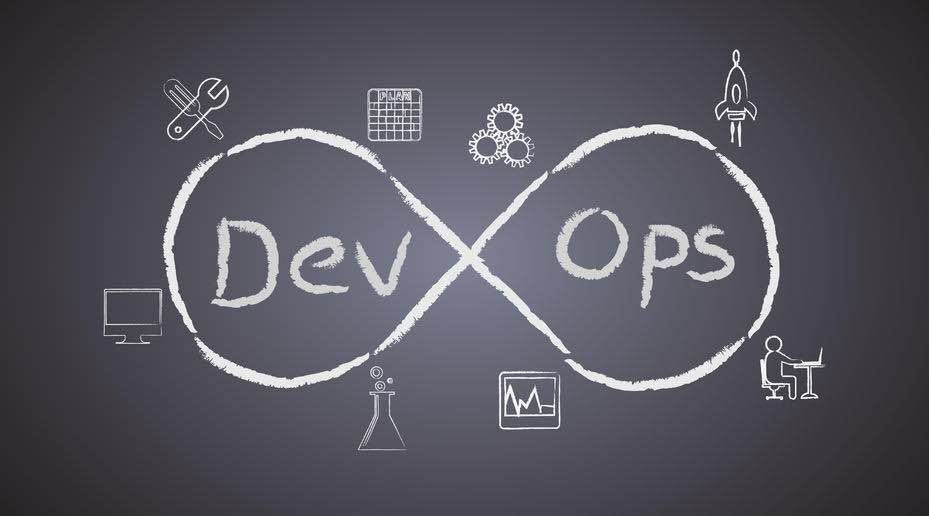

10节课带你深入学习 DevOps 工程

DevOps 现在真的很热门，对于杰出的工程师和 DevOps 专业人员来说有许多工作机会。 如果你想成为一名 DevOps 工程师，那么你来对地方了。在本文中，我将分享一下最好的在线培训课程， 让你成为 DevOps 专业人员。
Devops 最重要的优势，它可以帮助你更好地发布软件并且利用现代自动化工具对环境和软件开发过程中提供更多控制。这就是 DevOps 专业人员需求呈指数增长的原因。除了 Data Science 和 Machine Learning 外，它也是薪酬最高的 IT 工作之一。
根据 Glassdoor 的数据，DevOps 的工程师每年的收入从105000美元到146000美元不等。这意味着，如果你正在寻找加薪或想在美好年纪从事一些令人兴奋的工作赚更多的钱，学习 DevOps 可能是一个不错的选择。
学习像 Jenkins 这样的持续集成工具和像 Docker 这样的容器以及一般的 DevOps 技能，在技术领域获得了巨大的动力。这与几年前的移动应用程序开发类似。
公司希望新的开发人员能够管理 Web 应用程序的整个生命周期。这意味着开发和部署应用程序。
为了成为一名有效的 DevOps 工程师，您必须扩展对软件开发中使用的不同工具的知识，包括构建工具（如 Maven、 Ant 和 Gradle ）、单元测试工具（如 Junit 和 Selenium ）、部署工具（如 Docker ）、监控工具（如 New Relic ）、基础设施自动化工具（如 Chef 和 Puppet ）、源代码控制工具，如 Git 和 Github，以及持续集成工具，如 Jenkins 和 TeamCity。这些课程为基本的 DevOps 工具提供了很好的介绍。
十节面向经验丰富的开发人员 DevOps 课程
在不浪费更多时间的情况下，这里列出了一些学习 DevOps 的最佳课程以及在软件开发和部署过程中实现自动化所需的基本工具。
1.学习路径：现代 DevOps
DevOps 以一种全新的方式看待软件开发。您可以实现自动化，构建基础结构服务器的配置，然后解决自动化、连续部署、容器和监控方面的问题。
Git、Docker 和 Puppet 是现代 DevOps 世界中最重要的工具，本课程将向您介绍这三种工具。
简而言之，这是一门很好的入门课程，适用于系统管理员、开发人员和 IT 专业人员等 DevOps 领域的新手，还提供了对基本 DevOps 工具的良好概述。
2.面向 DevOps 和开发者的 Docker 技术
Docker 是 DevOps 最重要的技术之一。它允许您将组件捆绑在一起，并将它们部署在任何平台（如 Linux 或 Windows ）上的容器上。
本课程涵盖了 Docker 软件的所有基础知识，并向您传授了开发和部署 Docker 现代应用程序所需的一切知识。
3.Jenkins，从小白到专家：成为一名 DevOps JenKins 大师
Jenkins 可能是 DevOps 工程师进行持续集成工作的最重要工具。
对于 DevOps 专业人员，具备持续检查、持续集成、持续部署的知识，且知道它们之间的区别是十分必要的。
本课程涵盖了有关 Jenkins 的所有基础知识，并向您传授建立 Jenkins 构建管道所需的所有知识，从持续检查（构建、测试和静态分析）开始，一直到持续部署（待部署和生产）。
4.学习 DevOps：完整的 Kubernetes 课程
当谷歌十年前开始运行容器时，没有人能够达到这种基础设施的灵活性和效率。利用这些知识，谷歌发布了 Kubernetes 作为一个免费的开源项目。
如今，Kubernetes 被那些希望获得跟谷歌一样效率和速度的小公司和大企业使用。本课程将教您如何在 Kubernetes 上运行、部署、管理和维护容器化的 Docker 应用程序。
5.学习 DevOps：持续发布更好的软件
这是关于 Udemy 的 DevOps 的最完整的课程之一，它将教授您 DevOps 工程师使用的大多数基本工具和技术。
本课程面向这样的软件工程师和系统管理员：他们希望提供更好的软件，并帮助您在交付和部署过程中更好地使用 Git、Vagrant、Chef、Ansible、Jenkins、Docker 和 Kubernetes 这些工具。
6.DevOps 课程的 Docker：从开发到生产
本课程向您展示了通过 Docker，您可以构建什么以及如何进行构建。除此之外，你还将学习 Docker 的基本知识！我们将一起讨论开发和部署多服务 Flask 和 Ruby on Rails 应用程序。
7.学习 DevOps：使用 TerraForm 实现基础设施自动化
基础设施自动化是 DevOps 的一个重要组成部分。像 Ansible、Chef、Puppet 等工具都很有用，但 TerraForm 最近更受欢迎，如果您正在或即将成为一个 Ops/DevOps，您需要掌握这些工具，这就是本在线课程将帮助您的地方。
Terraform 开始于相同的规则、基础设施即代码，但更专注于基础结构本身的自动化。您的整个云基础设施（实例、卷、网络、IP）在 TerraForm 中被描述。
在本课程中，您将学习如何通过 TerraForm 以及 AWS、Packer、Docker、ECR、ECS 和 Jenkins 来实现自动化基础设施。
8.使用 AWS codepipeline、Jenkins 和 AWS codedeploy 的 DevOps
如果您对什么是持续集成（CI）或持续交付/持续部署（CD）感到困惑，以及如何使用 Amazon Web 服务（如 AWS 和Jenkins）进行 DevOps，那么这是适合您的课程。
在本课程中，您将学习必要的DevOps技能，以及在AWS云中的持续集成和持续交付。
9.DevOps：用 Jenkins pipelines, Maven, Gradle 进行 CI/CD
本在线 DevOps 课程将教您如何使用 Jenkins 及它的一些插件（尤其是流水线插件），来构建复杂的持续集成和持续交付流水线。
本课程旨在向您传授 Jenkins 的经验，并建立 DevOps 流水线，即使您几乎没有经验，也可以帮助您实现这些 DevOps 实践，从而简化您的开发过程。
总之，用 Java、Gradle、Maven、AtdiPrand 和 Sqitch 构建的持续集成、持续交付和 DevOps 流水线是一个伟大的过程。
10.用 Docker, Jenkins, GIT, Vagrant, 和 Maven 完成 DevOps
如果您正在寻找一个实践 DevOps 课程，它不仅可以向您解释 DevOps 工程师的角色，而且可以提供关于基本 DevOps 工具的实践经验，那么这是您的课程。
它提供了一个关于 DevOps 基本技术的完整教程。您将通过实践指导学习 Docker Mastery、Jenkins、Git、Vagrant 和 Maven。
正如我所说，对优秀的 DevOps 工程师和软件开发人员的需求呈指数级增长，市场上没有足够的 DevOps 专业人员来支持这一需求。
这意味着这是一个学习 DevOps 并进入这个更负责任、高薪和令人兴奋的领域的绝佳机会。如果你打算在2019年成为一名 DevOps 工程师，那么这些课程是一个很好的起点。
如果你喜欢这些 DevOps 课程，请与你的朋友和同事分享。如果您有任何问题或反馈，请留言。